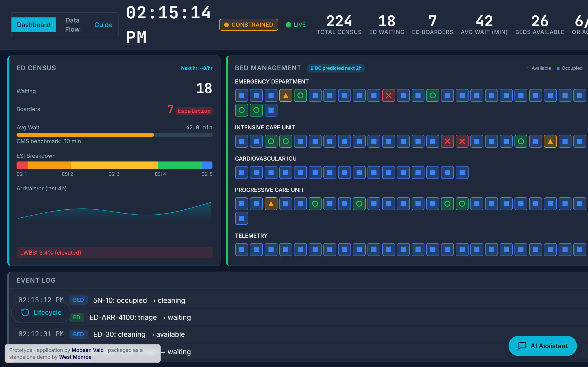
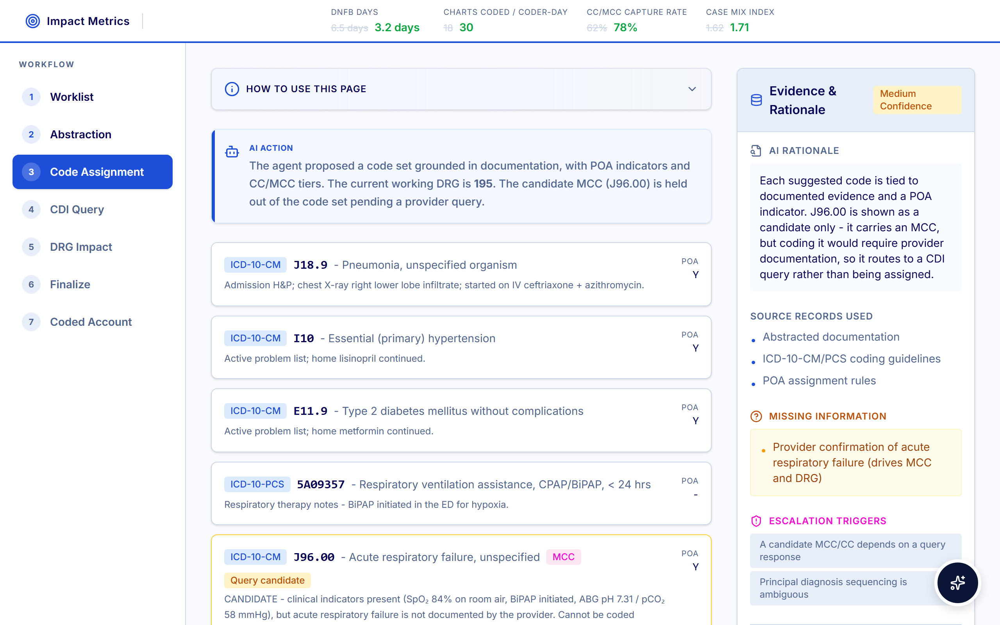
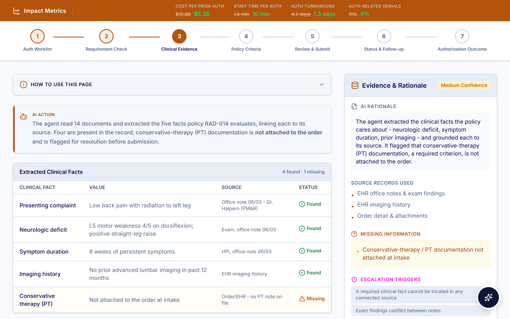
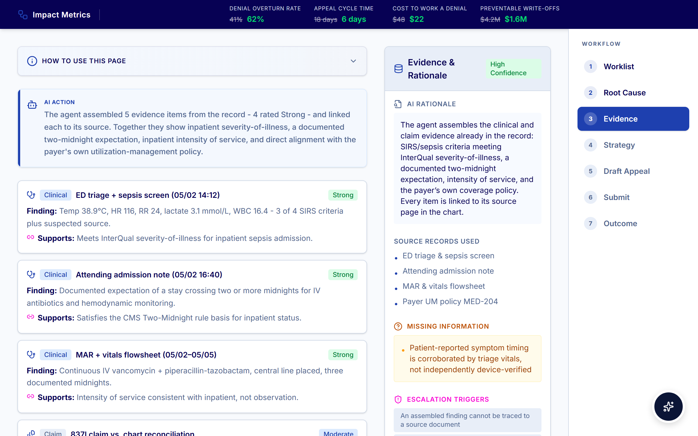
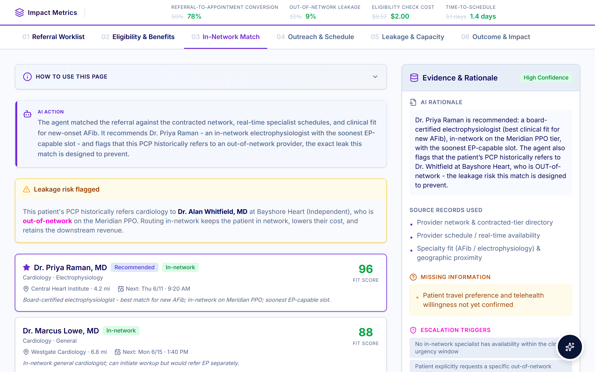
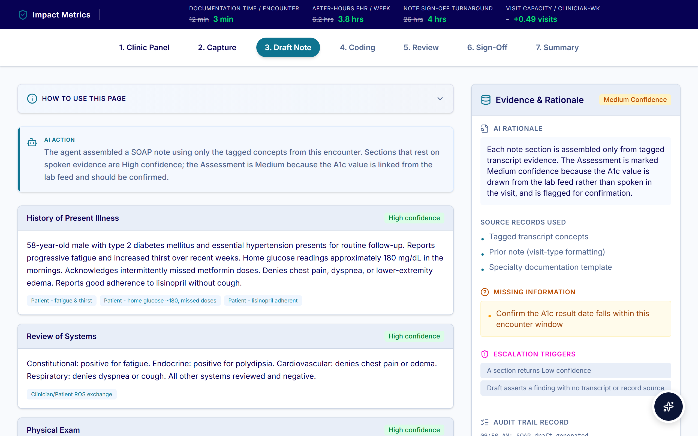
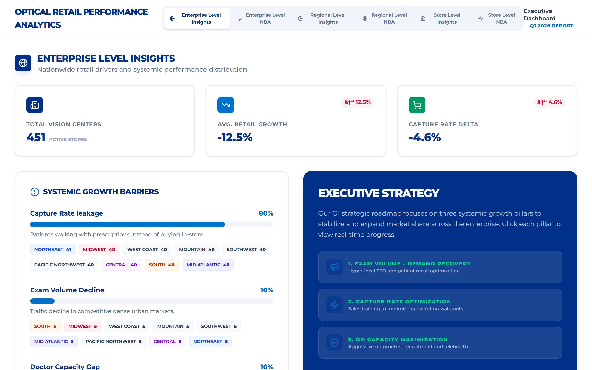

Onsite Data Workshop
Unified healthcare data, ready for decisions.
Turning Parkview’s enterprise data into governed insight, predictive intelligence, and AI-enabled workflow through a modern Databricks-centered platform.
Platform and ecosystem
01
Data foundations
System, streaming, and unstructured data are organized into governed healthcare domains.
SystemStreamingDocuments
02
Consumption layer & capabilities
Certified metrics, normalized views, transaction detail, interop, forecast inputs, and AI features make the platform reusable.
GovernedTraceableReusable
03
Enabled outcomes
Rapid insight, predictive analytics, and AI-enabled workflows are delivered through the right experiences.
AI/BIDatabricksRedox
Detailed platform map
A platform-centric architecture accelerates innovation while strengthening enterprise-wide data & AI governance.
Foundation
Where data lives today
Integration EngineData ingestion and orchestration
Connected / IoT DevicesReal-time device and sensor signals
Scheduling & ReferralsAccess, appointments, referrals
Electronic Health RecordClinical documentation and orders
Pharmacy / LaboratoryMedications, orders, results
Financial ManagementBilling, claims, payments, RCA
ERP / Supply ChainHR, procurement, inventory, operations
Scanning / Faxing / ImagingDocuments, images, reports, transcripts
Organize
Foundational data domains
At the core
Healthcare Data Platform
Governed. Secure. Scalable. AI-ready.
ClinicalOperationalFinancialDocuments
Make it consumable
Consumption layer & platform capabilities
Consumption layerPlatform capability
Enabled outcomes
What becomes possible
Data platform foundations
Build the foundation once, then reuse it across reporting, AI, and integration work.
Each foundation expands horizontally into a full-detail panel with scope, benefits, use cases, and implementation considerations.
Core Application System Data
Ingest, normalize, and cross-aggregate data across EHR, scheduling, pharmacy, lab, finance, ERP, supply chain, HRIS, and revenue cycle applications to create a shared operating view.
Typical scope
- Epic / Cerner, scheduling, pharmacy, labs, ancillary systems
- Financial management, Kodiak RCA, ERP, supply chain
- HRIS, timekeeping, provider, patient, and location masters
Executive benefits
- Connects clinical, financial, and operational context for root-cause analysis
- Creates a shared language for enterprise KPIs
- Reduces duplicative report logic and data cleansing
Initial use cases
- Post-Acquisition Data Integration Hub
- AI/BI Business Intelligence
- Executive KPI confidence layer
Future use cases
- Clinical Command Center
- Clinician Scheduling Optimization
- Supply Chain Optimization
Streaming Data
Enable near-real-time event feeds that support time-sensitive operational visibility, model freshness, care coordination, and in-workflow actions.
Typical scope
- Redox ADT feeds, clinical alerts, payer events
- Connected device and operational event streams
- Event taxonomy, routing, and enrichment patterns
Executive benefits
- Turns lagging measures into operational signals
- Supports proactive action on patient movement and care events
- Creates a common event backbone for analytics and workflow
Initial use cases
- Redox ADT Event Enablement
- Databricks Genie event-based AI BI
- Access and patient flow visibility
Future use cases
- Clinical Command Center
- Clinical Decision Support
- Care coordination worklists
Unstructured Data
Convert scans, faxes, reports, clinical notes, images, transcripts, and machine-generated files into searchable, structured, AI-ready information.
Typical scope
- Scans, faxes, PDFs, CCDs, referrals, call transcripts
- Radiology and imaging metadata
- Clinical documents and operational knowledge bases
Executive benefits
- Reduces manual review and document triage
- Makes hidden context searchable and measurable
- Supports downstream workflow triggers and AI grounding
Initial use cases
- Continuity of Care Document Intelligence
- Clinical document extraction
- Knowledge retrieval for staff workflows
Future use cases
- Patient Engagement Chatbot
- Clinical Knowledge Search
- IT Operating Hub
Consumption layer & platform capabilities
Platform features that make analytics trustworthy, reusable, and scalable.
These are not the enabled analytics experiences themselves. They are the Databricks-platform capabilities and consumption-layer features that give dashboards, models, and apps a governed foundation.
Consumption layer
Certified Metrics
Give leaders confidence that priority KPIs are defined, owned, quality-checked, and consistently used across executive reporting, operational huddles, and self-service analysis.
Business valueOne version of the truth for margin, access, volume, quality, and post-acquisition performance conversations.
SupportsRapid InsightsPredictive Analytics
Consumption layer
Normalized Views
Package source complexity into consumption-ready patient, encounter, provider, order, schedule, claim, and supply views that business and analytics teams can reuse.
Business valueFaster analysis without rebuilding joins and definitions for every initiative.
SupportsRapid InsightsAI & Workflow
Consumption layer
Transaction Detail
Keep record-level traceability available behind executive metrics so teams can drill from trends into encounters, charges, claims, payments, orders, events, and exceptions.
Business valueSupports reconciliation, auditability, and root-cause analysis when a metric changes.
SupportsRapid InsightsCompliance & trust
Consumption layer
Forecast / Budget Inputs
Connect historical trends, seasonality, run rates, capacity assumptions, and operational drivers so planning teams can scenario-test the future with consistent data.
Business valueBetter planning confidence for staffing, access, service-line growth, supply utilization, and financial performance.
SupportsPredictive AnalyticsRapid Insights
Platform capability
Interoperability
Use controlled exchange patterns, APIs, FHIR / HL7 integration, and partner connectivity to move data and events between the platform and operational systems.
Business valueConnects insights to the systems and workflows where decisions are made.
SupportsAI & WorkflowStreaming Data
Platform capability
Reusable AI Features
Curate model-ready features, embeddings, prompt-grounding context, and governed AI datasets so advanced analytics can reuse trusted signals instead of recreating them.
Business valueAccelerates responsible AI adoption while preserving security, lineage, and performance monitoring.
SupportsPredictive AnalyticsAI & Workflow
Use case library
Use cases are organized by outcome, prerequisite foundation, partner relevance, and complexity.
Each use case includes a clearer business description, conceptual solution sketch, benefit areas, prerequisites, and complexity drivers.
Post-Acquisition Data Integration Hub
Integrate acquired EHR and financial sources into Databricks, profile data quality, align definitions to Parkview standards, and publish certified metrics that executives can analyze in AI/BI.
Faster KPI onboardingReduced reconciliation effortEarlier quality-risk visibilityRepeatable acquisition playbook
Parkview EHRAcquired EHR(s)Finance System(s)Supply Chain System(s)Workforce System(s)
Integration Hub
Executive DashboardCertified metricsOperational views
AI/BI Business Intelligence
Give business leaders trusted, conversational exploration and dashboards over certified metrics without recreating logic in every report.
Certified metricsAI/BI workbookLeader Q&A
Redox ADT Event Enablement
Use admission, discharge, and transfer events to trigger operational visibility, worklists, and care coordination actions.
ADT eventDatabricks streamWorklist trigger
Continuity of Care Document Intelligence
Extract, classify, and route key clinical details from scanned and faxed documents to reduce manual review and improve follow-up.
Fax / scanExtract fieldsRoute to queue
Clinical Command Center
Combine operational, clinical, and event data to help leaders manage patient flow, capacity, discharge readiness, and bottlenecks.
Bed + ADT signalsForecast riskLeader console
Clinician Scheduling Optimization
Forecast demand and align clinician capacity, access goals, utilization patterns, and patient appointment needs.
Demand forecastCapacity modelSchedule options
Supply Chain Optimization
Connect utilization, cost, vendor, and inventory signals to reduce variance and improve service-line decision making.
ERP + utilizationVariance analysisAction plan
Patient Engagement Chatbot
Ground patient-facing or staff-assisted engagement in governed knowledge, operational context, and workflow integrations.
Policy + contextAI assistantWorkflow handoff
Featured onsite story
Post-Acquisition Data Integration Hub
Gain insights across acquired facilities in a standard, repeatable pattern: acquire new data, assess quality, standardize definitions, certify metrics, and analyze performance in AI/BI.
Acquisition source intake
Databricks becomes the consistent landing zone for acquired clinical, operational, and financial datasets.
Parkview EHRAcquired EHR(s)Finance System(s)Supply Chain System(s)Workforce System(s)
Databricks Bronze / Silver intakeData inventory and quality profile
Profile source coverage, anomalies, lineage gaps, and integration risks before dashboard decisions are made.
Enterprise glossary mapping
Source-specific terms are rationalized to Parkview-defined data elements before metrics are certified.
| Source term | Certified definition | Status |
|---|---|---|
| Net Revenue | Net Patient Service Revenue | Mapped |
| Visit Type | Encounter Class | Review |
| Service Dept | Operating Unit | Mapped |
Certified Metric Hub
Metrics are published with ownership, lineage, quality thresholds, and access controls.
Finance KPIsOwner: Finance
Operational metricsOwner: Operations
Regulatory elementsOwner: Compliance
Executive Dashboard
Executives see consolidated finance and operational views with metric confidence and drill-down paths.
$Margin trend
92%Metric confidence
Benefits
Moderate estimate ranges for discussion: 20-35% less reconciliation effort, 25-40% faster KPI onboarding for acquired entities, earlier quality issue visibility, and a repeatable playbook for future transactions.
Complexity
Medium. Higher if source data lacks dictionary coverage, identity resolution, or finance definition alignment.
Databricks App Demos
A solid data foundation is a launch pad for value-driving innovation
These working demos show how governed healthcare data can become role-based Databricks Apps, AI-assisted workflows, and executive-ready analytics experiences for health system teams.
Art of the Possible
From trusted platform data to apps people can use.
Each demo is framed as a conceptual prototype: the screenshots and embedded demos illustrate the experience layer that can sit on top of Parkview’s foundational data domains, consumption layer, and platform capabilities.
Databricks Apps
AI / BI + Genie
Workflow-ready

Hospital Operations Command Center
Unifies bed, ED, OR, and discharge signals into a current operating view with short-horizon forecasts and operator-owned capacity recommendations.
- Provides a live house-wide operating picture.
- Forecasts near-term arrivals, discharges, and bottlenecks.
- Turns event data into practical capacity options.
Illustrative valueReduced coordination friction, earlier bottleneck detection, and more consistent flow decisions.

Clinical Coding & CDI Copilot
Abstracts charts into supported codes, surfaces compliant CDI opportunities, and models DRG and reimbursement impact before coder attestation.
- Links every recommendation to documentation evidence.
- Highlights CC/MCC opportunities for compliant query review.
- Supports audit-defensible final coding decisions.
Illustrative valueLower DNFB pressure, faster coding throughput, and more consistent severity capture.

Prior Authorization Automation
Checks whether authorization is required, maps clinical evidence to payer criteria, flags missing documentation, and assembles a staff-reviewed submission packet.
- Reduces manual evidence gathering and rework.
- Supports defensible payer-facing submissions.
- Helps prevent authorization-related care delays.
Illustrative valueLower cost per authorization, faster submission readiness, and fewer preventable denials.

Denial Management & Appeals
Ranks denials by recoverable value and overturn likelihood, root-causes each event, and drafts evidence-backed appeal content for specialist review.
- Prioritizes the denials most worth working.
- Connects line-level evidence to appeal narratives.
- Keeps every submission human-owned.
Illustrative valueHigher appeal productivity, faster cycle time, and reduced preventable write-offs.

Patient Access & Referral Leakage
Ranks referrals by leakage risk and value, verifies eligibility, estimates patient cost, and helps staff match patients to the right in-network slot.
- Creates a single queue for high-value referral action.
- Supports access, network retention, and patient follow-up.
- Surfaces next-best actions without removing staff judgment.
Illustrative valueBetter referral conversion, reduced leakage, and faster time to scheduled visit.

Ambient Clinical Documentation
Turns a visit conversation into a sourced draft note, suggests supported E&M and diagnosis codes, and keeps clinician attestation at the center of the workflow.
- Drafts note sections from structured encounter context.
- Flags unsupported content for clinician review.
- Creates an auditable pathway from conversation to signed note.
Illustrative valueLess after-hours documentation time, faster note completion, and improved provider capacity.

Multi-Site Eye-Care Performance Analytics
Rolls site, region, and group performance into one view, pinpoints volume and provider-capacity gaps, and ranks next-best actions by opportunity.
- Shows multi-site operating performance in one experience.
- Identifies access and volume gaps by market.
- Helps leaders pick the action that fits local context.
Illustrative valueClearer performance variance, prioritized growth actions, and faster operating reviews.
Enabled analytics and intelligence
Once the foundation and platform capabilities exist, Parkview can scale three outcome families.
Outcome family
Rapid Insights
Deliver trusted executive dashboards, AI-assisted exploration, and embedded analytics experiences on top of a source-of-truth consumption layer.
AI/BIDatabricks SQLDatabricks GenieDatabricks Apps
Parkview can see
- Finance KPI dashboards
- Post-acquisition performance reporting
- Contact center and access views
- Operational huddle dashboards
Needs from the platform
- Certified Metrics
- Normalized Views
- Transaction Detail
- Governed semantic definitions
Executive workbookMetric confidence 92%
+4.2%Volume18 daysKPI onboarding7Quality flags
Outcome family
Predictive Analytics
Use historical patterns, operational signals, and model-ready features to anticipate demand, risk, capacity constraints, and financial performance.
Databricks Lakehouse AIMLflowFeature StoreModel Serving
Parkview can predict
- Capacity and demand forecasts
- Clinical command center signals
- Next best action opportunities
- Supply and workforce variance
Needs from the platform
- Reusable AI Features
- Forecast / Budget inputs
- Streaming Data
- Model monitoring and governance
Demand forecastHigh-volume risk in 14 daysDrivers: seasonality, access backlog, staffing mix
Outcome family
AI & Workflow
Operationalize AI and analytics through apps, copilots, worklists, and workflow actions that are grounded in governed data and connected to the right systems.
Databricks AppsDatabricks Lakebase
Parkview can activate
- Patient engagement chatbot
- Care coordination worklists
- Scheduling optimization actions
- AI outputs surfaced in workflows
Needs from the platform
- Interoperability
- Unstructured Data
- Reusable AI Features
- Security and audit controls
Event triggerNew discharge-ready signal
AI recommendationPrioritize follow-up worklist
ActionRoute to care team queue
Onsite Data Workshop
West Monroe | Prepared for Parkview Health
A guided executive conversation on how a Databricks-centered healthcare data platform can strengthen governance, accelerate insight, and create a reusable foundation for AI-enabled workflows.